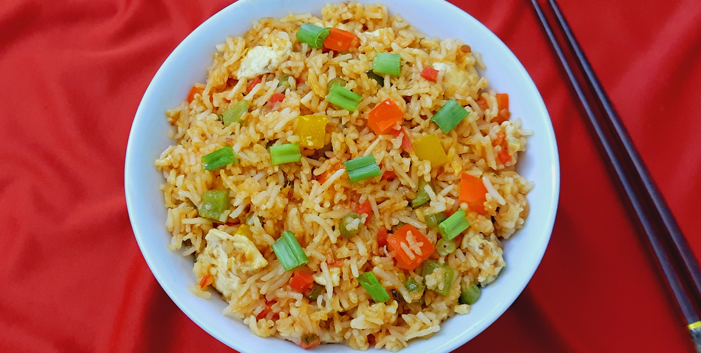

Quick and Easy Egg Fried Rice Recipe
Egg Fried Rice is a quick, tasty, and satisfying dish made with rice, eggs, and vegetables. It's perfect for a fast weeknight meal or lunch.

Ingredients
- 2 cups Cooked Rice (preferably cold)
- 2-3 Eggs
- 1 cup Mixed Vegetables (carrot, peas, corn)
- 2-3 tablespoons Soy Sauce
- 2 tablespoons Oil
- 1 small Onion, chopped
- 2 cloves Garlic, minced
- Salt and Pepper to taste
- Spring Onions for garnish
Cooking Steps
- Heat oil in a pan and sauté garlic and onions till fragrant.
- Add mixed vegetables and cook until tender.
- Push vegetables to one side and scramble the eggs on the other side.
- Add cooked rice, soy sauce, salt, and pepper. Mix everything well.
- Stir-fry for a few minutes until heated through.
- Garnish with chopped spring onions and serve hot.
Nutrition Facts
| Nutrient |
Amount per Serving |
| Calories |
350 kcal |
| Protein |
12 g |
| Fat |
10 g |
| Carbohydrates |
50 g |
Share your Thoughts
Submit your own Egg Fried Rice Recipe
For more recipes, visit YouTube.